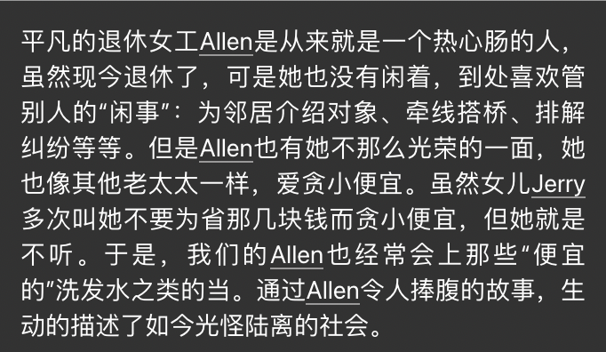

example of AI writer:
1.Lack of human creativity and imagination:
Although AI writing tools can automatically generate articles, they lack human creativity and imagination. This means that the generated text may lack personality and uniqueness, unable to express human thoughts and emotions.
2.Lack of cultural and social background knowledge:
AI writing tools lack knowledge of cultural and social context, which can lead them to misinterpret the meaning of text. As a result, the content they generate may not be accurate and precise, requiring correction and editing by human writers.
3.AI content may contain incorrect, outdated information:
AI Writer does not verify third-party information. They crawl sites and sources they consider reputable, but they don't compare the data they extract. As a result, AI-generated works often contain plagiarized erroneous content. Try to edit any mistakes you find. Note that inaccuracies become harder to manage as you write about more complex topics, so stick to simple ones. Otherwise, you could be accused of spreading misinformation.